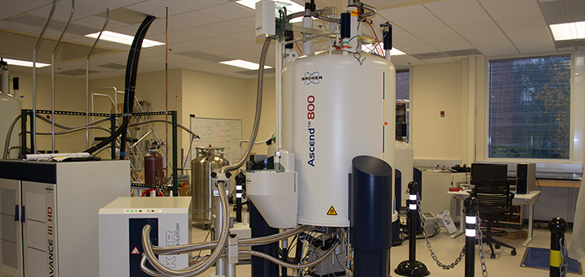

주요설비
유한양행은 국내 제약사 중
가장 넓은 연구소와
우수 연구시설을 보유하고 있습니다.
중앙연구소에서는 신약 후보물질 탐색과 약효평가에 필수적인 시설과 장비 (핵자기공명분석기(NMR), 질량분석기(LC-MS), XRD, 단백질 정제시스템(AKTA Avant150), 세포배양실 등), 새로운 제형 연구를 위한 장비 (다층타정기, one-pot 등), 영상분석기 (IVIS spectrum), 그리고, 규제 기관에서 승인한 실험동물시설과 같은 우수한 시설을 보유, 운용하고 있습니다.
-
LC-MS실
각종 액상크로마토그라피/질량분석기 장비를 운영하는 실험실입니다.
-
시료분석실
신약 후보물질의 약물동태실험(흡수, 분포, 대사 및 배설)에 대한 각종 시료분석을 위한 실험실입니다.
-
IVIS spectrum
형광 혹은 레이저에 반응하는 미량의 발광물질을 감지하여, 세포의 반응을 실시간으로 분석하는 장비 입니다.
-
세포배양실
바이오의약품의 생산에 필수적인 세포주 및 배양공정을 개발하는 실험실입니다. 무균작업대, CO2 배양기, 세포계수기, 세포 대사체 분석기, 바이오리액터(3~50L)등 구성되어 있습니다.
-
One-pot 과립기
제형연구에 VMA10 모델을 보유하고 단일 용기(One pot)내에서 과립의 습식 제조 및 건조가 모두 가능한 과립기입니다.
-
XRD(X-ray Diffractometer)
유기 및 무기 화합물의 결정형 측정 및 결정다형연구에 Bruker AXS / D8 Advance를 보유하고 있습니다.
-

NMR Spectrometer
신규 화합물의 화학 구조분석에 사용되는 장비로서 Bruker 400 MHz Avance, Agilent 600 MHz PremiumCOMPACT를 보유하고 있습니다.
-
단백질 정제시스템(AKTA Avant150)
바이오의약품의 개발과정에 필수적인 고순도 단백질을 분리 정제하는 장비로 구성된 실험실입니다. AKTA purifier, AKTA Avant, 및 AKTA pilot 등의 장비로 구성되어 있습니다.
-
다층타정기
의약품의 특수 제형 연구에 FlexiTab 모델을 보유하고, 단층정을 포함하여 다층정을 제조하는 장비입니다